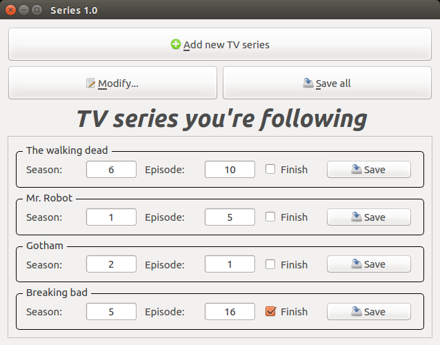

Series
SeriesSeries
Keep track of your favourite TV series!
With this simple program you can create a sqlite db and add the last episode/season you watched. You can do this for every series you want!
You'll never forget which was the last episode.
This program uses Qt and sqlite libraries.
It's available on Linux (Debian distros), Windows and Mac OS X. You can download source code and build it by yourself or you can simply download the pre-built binary for your OS.

Features
- Add new TV Series to a sqlite database;
- Keep track about last season and episode watched, with a "finish" flag used at users leisure;
- Rename series, reorder them or remove them;
- Automatic checking for new updates.
TO DO
- Implement cloud service to share the db with other devices
How to install
How to install the program on your OS.
Linux OS
Pre-built binary available for download. The .deb package has been built on Debian 8 Jessie 64-bit.
Download source code and build it by yourself
To build this program make sure you installed the following libraries:
- qt5-default;
- qtcreator (optional);
- libsqlite3-dev.
First of all, download the latest release, then extract the source code in one folder. Open a terminal in that folder and execute:
$ qmake -config release
$ make
Double click the ELF file, named series, and the program will start!
If you want to create a .desktop file you can use series_.png image (128x128) as file icon.
Install on Ubuntu Trusty or newer
You can download and install the binary package from the PPA repository mani-ddev/series. Open a terminal and execute:
$ sudo add-apt-repository ppa:mani-ddev/series
$ sudo apt-get update
$ sudo apt-get install series
Mac OS X
Pre-built binary available for download. The .dmg file has been built on Mac OS X 10.11 El Capitan 64-bit.
To build this program make sure you installed all the Qt libraries; if you're running an OS X version lower than 10.5 (Leopard), you'll need to install also sqlite3 libraries.
Also be sure to export the qmake path in this way:
$ PATH=/users/<your_user>/Qt/<qt_version>/bin:$PATH
$ export PATH
First of all, download the latest release, then extract the source code in one folder. Open a terminal in that folder and execute:
$ qmake -config release
$ make
If you want to run it on another MAC (a MAC without Qt libraries), you have to execute this:
$ macdeployqt ./series.app
Double click the APP file, named series, and the program will start!
Windows OS
Pre-built binary available for download. The .exe file has been built on Windows 10 64-bit (it works also on 32-bit version).
First, download Qt Creator.
Then, once you downloaded the latest release, open the series.pro file with your favourite text editor to remove some lines:
File: series.pro
[...]
QT += core gui
greaterThan(QT_MAJOR_VERSION, 4): QT += widgets
TARGET = series
VERSION = 1.2
TEMPLATE = app
CONFIG += warn_on
#DESTDIR = bin
#MOC_DIR = build/moc
#RCC_DIR = build/rcc
#UI_DIR = build/ui
#OBJECTS_DIR = build/o
[...]
You just have to put the # character at the beginning of the last four lines that have it in the above example. Then, open the project with Qt Creator, select Build -> Release and build it.
To make it works (in your PC, which has Qt libraries installed) you need the following .dll files in the .exe file folder:
libgcc_s_dw2-1.dll
libstdc++-6.dll
libwinpthread-1.dll
Qt5Core.dll
Qt5Gui.dll
Qt5widgets.dll
Qt5Network.dll
If you want to run it on another PC (a PC without Qt libraries), you have to make a folder like this:
-Series/
- platforms/
- qwindows.dll
- icudt54.dll
- icuin54.dll
- icuuc54.dll
- libgcc_s_dw2-1.dll
- libstdc++-6.dll
- libwinpthread-1.dll
- Qt5Core.dll
- Qt5Gui.dll
- Qt5widgets.dll
- Qt5Network.dll
- series.exe
Now, double click the EXE file, named series, and the program will start!